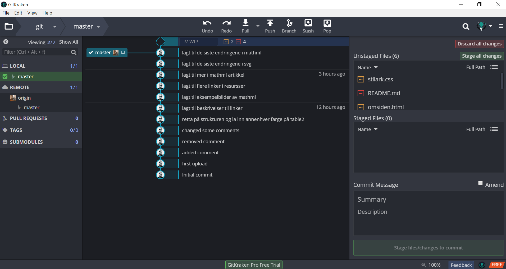

Git
Git er et verktøy for versjonskontroll og kodedeling. Versjonskontroll er systemer som holder kontroll på forandringer som skjer i en fil eller flere filer. Ved hjelp av versjonskontroll har man mulighet til å gå tilbake til tidligere versjoner av filen. Git er et verktøy for nettopp dette. Ved å bruke Git, så er det enklere for flere personer å jobbe med den samme koden. GitHub er et program som bruker versjonskontroll. Det er en tjeneste på internett som brukes for kode. Tjenesten lar flere gjøre endringer i en kode, skrive kommentarer eller rapportere om feil (bugs). Fordelen med å bruke et slikt program er at flere personer kan jobbe med et større prosjekt samtidig, og ha god oversikt over hva som skjer med koden.
Under kan du se et skjermbilde av gitkraken. Bildet viser hvordan man kan redigere koden i filen, og at GitKraken plukker opp disse endringene, som du kan commite og kommentere. Man kan altså ved hver endring kommentere hva man har endret på. Som er en stor fordel dersom man er flere på et prosjekt, eller for å ha oversikt selv over hvilke endringer som er gjort.
